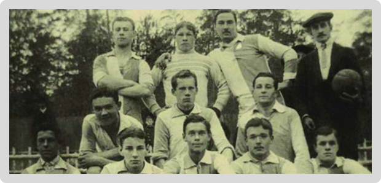

История

29 апреля
В этот день прошел первый спортивный праздник – футбольный матч между воинами-спортсменами за первенство столицы. Москвичи впервые увидели команду с неизвестной прежде спортивной эмблемой ОППВ – Опытно-показательная военно-спортивная площадка всевобуча. Она образовалась при Центральном управлении военной подготовки трудящихся на базе еще дореволюционного «Общества любителей лыжного спорта», располагалась в Сокольническом парке Москвы и стала первой центральной спортивной организацией Красной Армии.
Силами добровольных помощников базу, расположенную в центре Сокольнического парка, огородили, отремонтировали и расширили трибуны стадиона, подготовили беговую дорожку длинной 350 метров, привели в порядок секторы для метания и прыжков, несколько игровых площадок. Недалеко от центрального входа в парк появилась лыжная база.
На базе ОППВ развивали ценные в военно-прикладном отношении виды спорта: легкую и тяжелую атлетику, футбол, баскетбол, гимнастику, бокс, стрелковый и лыжный спорт, хоккей с мячом.
Через пять пять лет в феврале 1928 года ОППВ вошло в состав Центрального Дома Красной армии как отдел физической культуры и спорта. Еще через тридцать лет приказом военного ведомства страны был создан Центральный спортивный клуб Министерства обороны. Привычное и известное сейчас всем название Клуб обрел в 1960 – именно тогда он был переименован в ЦЕНТРАЛЬНЫЙ СПОРТИВНЫЙ КЛУБ АРМИИ. Несмотря на долгую, растянувшуюся на четыре десятилетия историю названия, День рождения ЦСКА отмечают 29 апреля 1923 года – день первой игры воинов-спортсменов.
Сегодня в ЦСКА состоят спортсмены из 126 городов России. Развивается 72 вида спорта.

